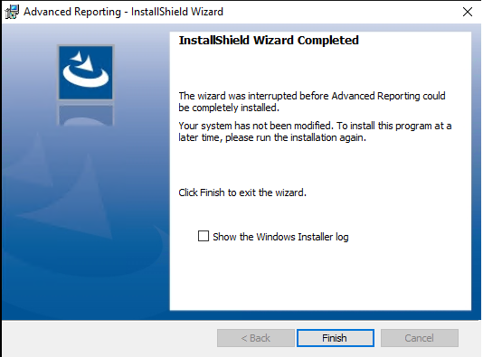
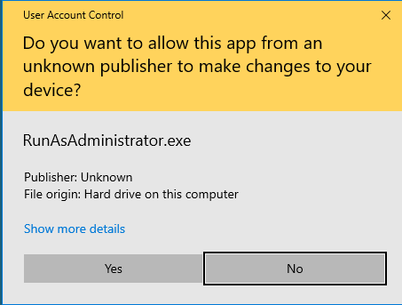
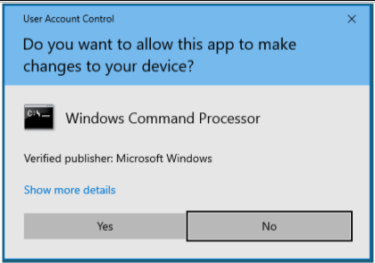

Advanced Reporting Fails to Install
Problem: Installation of Advanced Reporting MSI fails, is stopped or interrupted.

Cause: During installation of the Advanced Reporting MSI, various User Account Control pop-up messages display. The installation fails in the following situations:
a) If you do not respond to these messages by clicking Yes within 2 minutes, the pop-up messages disappear and the installation fails.
b) If you respond to any of these messages by clicking No, the pop-up messages disappear and the installation fails.


Solution: Reinstall the Advanced Reporting MSI by ensuring that you respond to all the User Account Control pop-up messages by clicking Yes within 2 minutes of the pop-up message appearing.